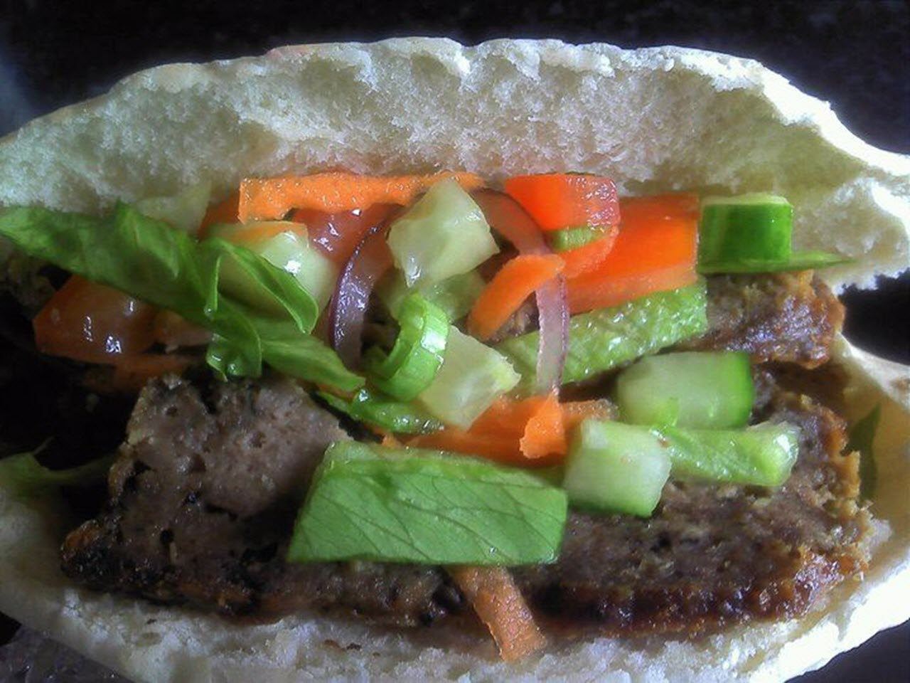

Doner Kebab

Description
Doner meat kebabs are popular take-out foods, especially after a night at the pub. This favorite is so tasty — I'm sure once you try it, you'll certainly want to make more! Serve with warmed (lightly toasted) pita bread, chili sauce, and a salad of shredded cabbage, carrot, onion, and sliced cucumber. Also great to add as a topping for pizzas. Great to make in advance, slice and freeze.
Ingridiens
- 1 teaspoon all-purpose flour
- 1 teaspoon dried oregano
- 1/2 teaspoon salt
- 1/2 teaspoon garlic powder
- 1/2 teaspoon onion powder
- 1/2 teaspoon dried Italian herb seasoning
- 1/4 teaspoon ground black pepper
- 1/4 teaspoon cayenne pepper
- 1 and 1/4 pounds ground lamb
Description
- Preheat the oven to 350 degrees F (175 degrees C).
- Combine flour, oregano, salt, garlic powder, onion powder, Italian seasoning, black pepper, and cayenne pepper in a large bowl. Add ground lamb and knead until thoroughly mixed together, about 3 minutes.
- Shape seasoned lamb mixture and place into a loaf pan; set on top of a baking sheet.
- Bake in the preheated oven, turning halfway to ensure even browning, for about 1 hour and 20 minutes.
- Wrap loaf in aluminum foil and let rest for about 10 minutes. Slice as thinly as possible to make doner kebab pieces.